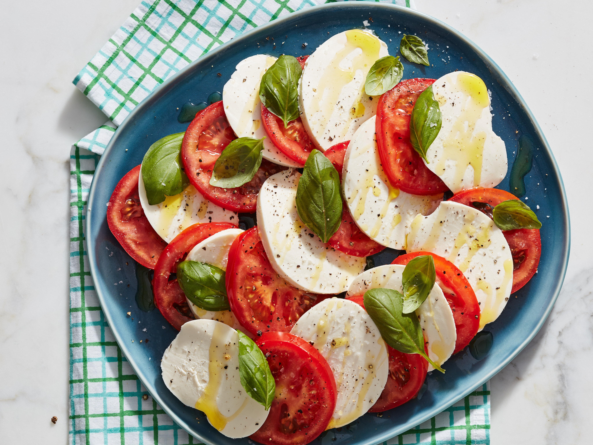

Honey Mustard Chicken

Beautiful, tasty caprese salad
Ingredients:
- 2 large ripe tomatoes
- 1 ball of fresh mozzarella cheese
- Fresh basil leaves
- Extra virgin olive oil
- Balsamic glaze or balsamic vinegar
- Salt and black pepper to taste
Steps:
- Wash the tomatoes and basil leaves thoroughly. Slice the tomatoes and fresh mozzarella cheese into even, thick slices.
- On a serving platter or individual plates, arrange the tomato and mozzarella slices in an alternating pattern, slightly overlapping each other.
- Tuck fresh basil leaves between the tomato and mozzarella slices.
- Drizzle extra virgin olive oil over the salad, making sure to coat the tomatoes, mozzarella, and basil evenly.
- Drizzle a balsamic glaze or balsamic vinegar over the salad. The sweet tanginess of the balsamic glaze complements the flavors of the tomatoes and mozzarella perfectly.
- Season the salad with a pinch of salt and freshly ground black pepper according to your taste.